TERM II
Extended Intelligences
Intelligence asserts itself above all not in art, nor in science, but in intuition of life.
- Maria Pappova
What is intelligence really?
In “Optimism,” Jane Hirshfield reverences the concept of ‘blind intelligence’ by which a tree relentlessly orients toward the light to survive a kind of unreasoning, life-hungry intuition distinctly different from the way we humans define and measure our own intelligence, our measurements and definitions mired in myriad cultural biases and blind spots. The Western model of intelligence, with its fixation on the logical-mathematical mind, is in some deep sense the ultimate blind intelligence, dappled with blind spots that obscure so much of the raw, unmediated attentiveness to life that make it not only survivable but worth living.
From infancy, humans are held and taught how to walk and this learning and it’s intricacy only gets complex and richer as we grow. Similar to the odd act of mimicking silly words to impart the knowledge of talking, there are various things that various species in nature adapted to deem survival and intelligence. At a certain maturity of 3 weeks, a hatchling is pushed out of a nest, expected to fall from a chilling height with an expectancy to fly perfectly for the first time. This can oddly be reliant on the fact that the chick has watched everyday and mimicked the action of flying from it's progenitors.
In this modern age of Artificial Intelligence, the news is seemingly familiar with headlines that sound like they’re straight out of a science fiction movie:
An Artificial Intelligence Developed Its Own Non-Human Language.
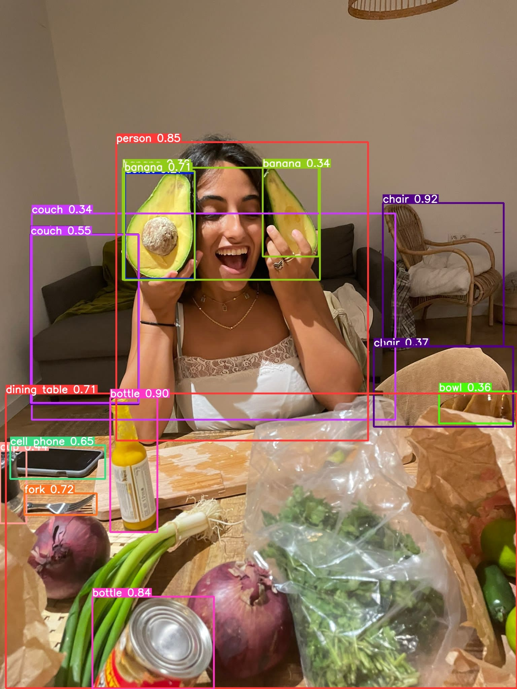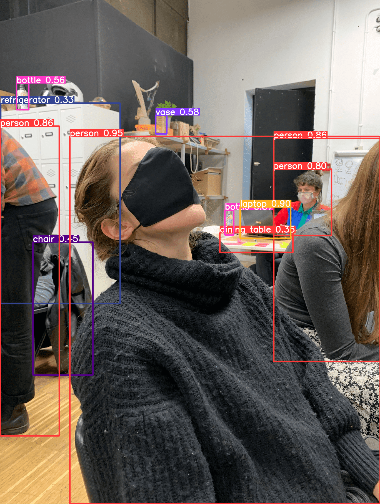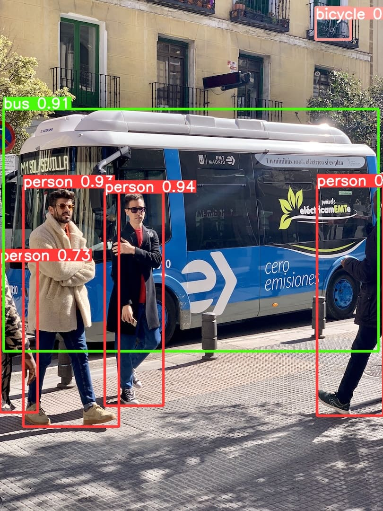
Fig. 7.1 Detecting objects using AI
The problem does not lie in the extent of this intelligence but how we approach it. Intelligence in various eras has been quantified as a singular entity. Rather in my view it is much more than a defining noun. Intelligence is a spectrum of various grades, almost like a gray area. It's a combination of various degrees of decision making, reasoning and strategizing; that too when an entity is ‘more intelligent’, the more intricate and cyclical these actions are. When you zoom into these instances a bit, you’ll realize that these decisions are only and mostly derived from codes mimicking existing systems and data sets. These data sets are the modern-day metaphors of those moments when your mother mimicked the word mumma for eternity, until you said it for the first time. Now it’s just one of those many videos uploaded by your parents on social media being used as a dataset.
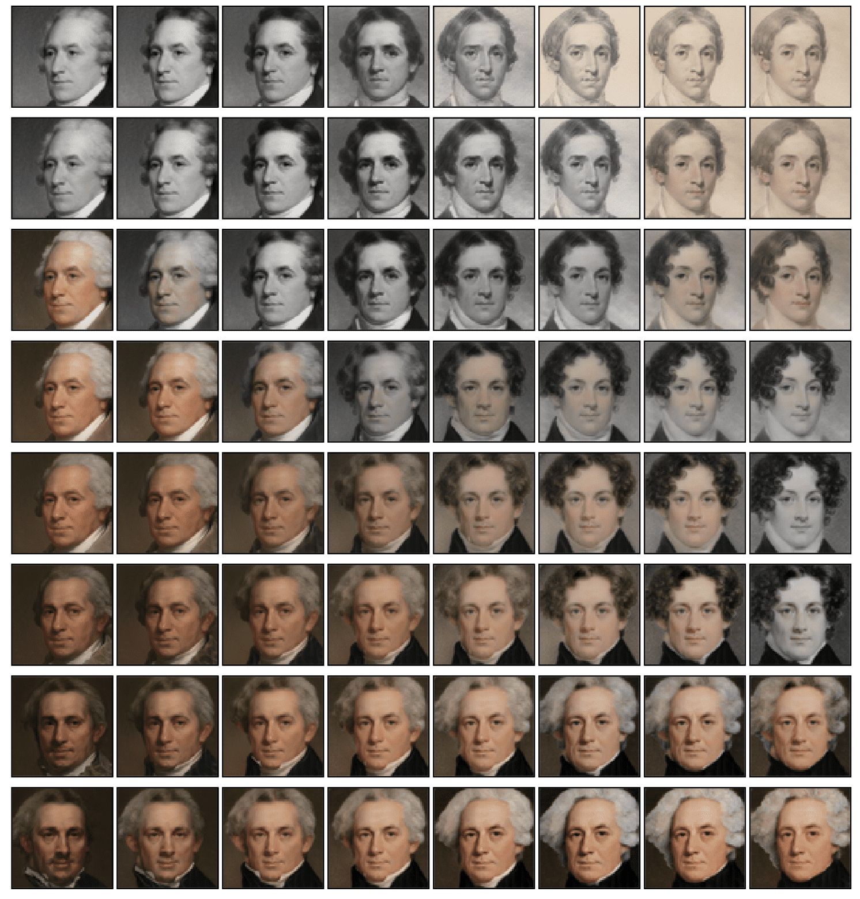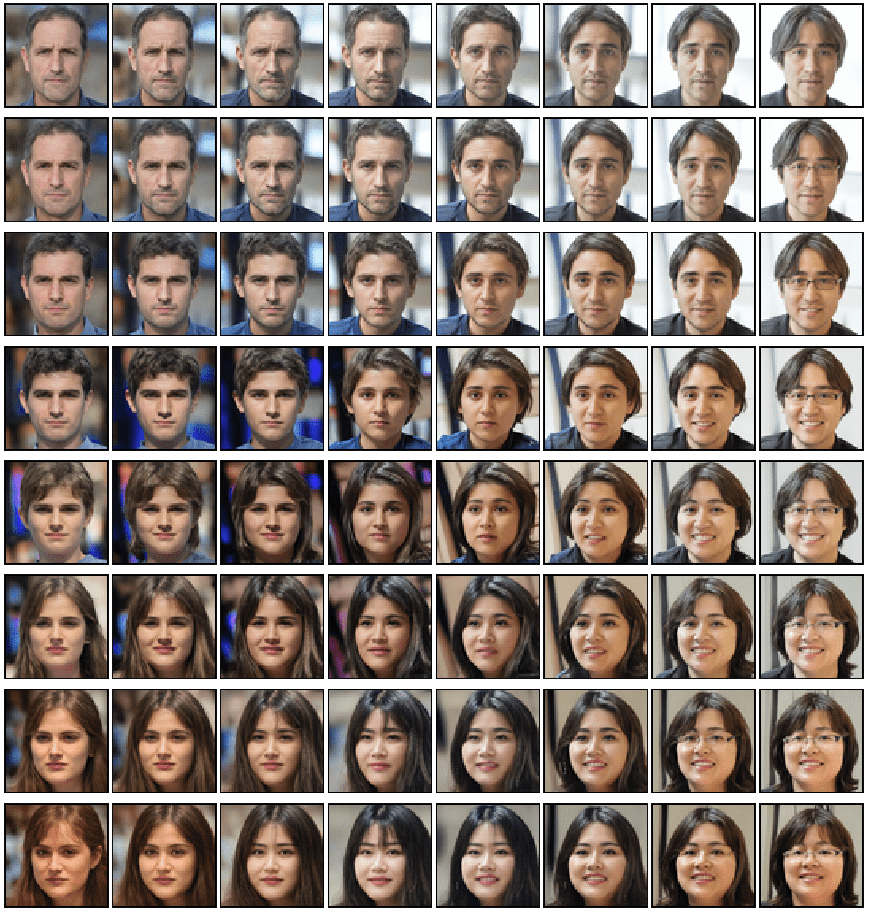
Fig. 7.2 Data sets and seeds from (a) Met Gala Paintings (b) 'Almost Fake People'
In the first week of the class, we were provided with resources that gave us a brief understanding of what Machine Learning is. The truth is in fact that it's nothing more than pushing a bird out of a nest and expecting it to fly. It’s the literal feeding of data to a code or a part of a code to automate tasks and responses. The role of Homogeneity and heterogeneity were understood by an open discussion on Neural networks and the biases they create. The defining element was the concluding statement that discussed the importance of what we decide for a neural network to learn versus what we do not.
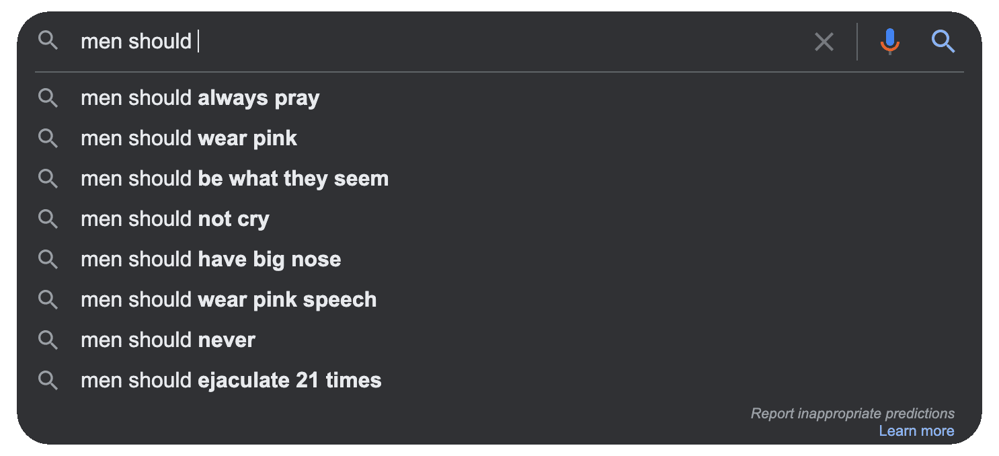
Fig. 7.3 Google search results for 'men should'
This encompassed a task of creating a collective dataset revolving around PobleNou. My fascination lay around the vibrancy of types and stickers around the locality which you’ll find below.
Datasets and their implementation were explored through a visual and speculative project on the life-cycle of everyday food. The aim was to speculate the neglected resourcefulness of food at different stages of degradation. The utilized dataset is the images of a tomato in different forms and ecosystems. The expected output is a visual life cycle covering its origin, shelf-life and death. We learned how to train a limited dataset using Tensorflow and preventing ‘overfitting’. You can find the presentation here.
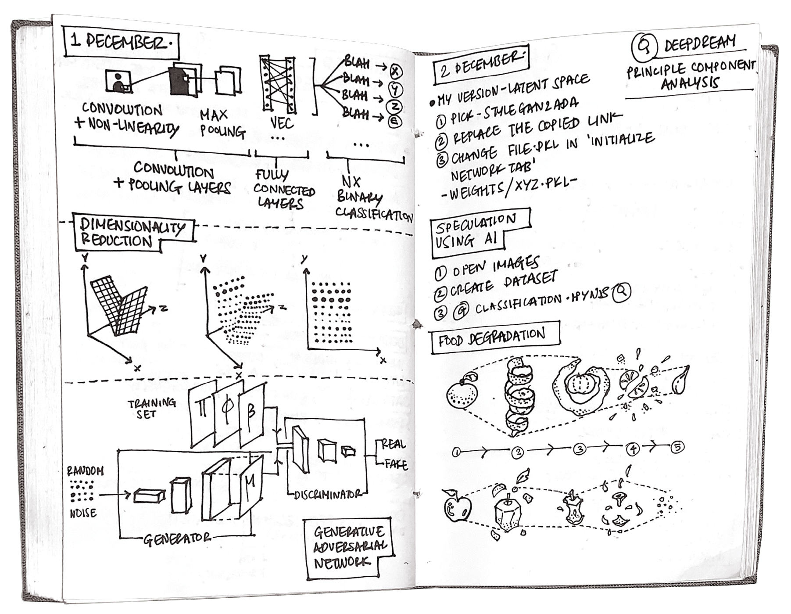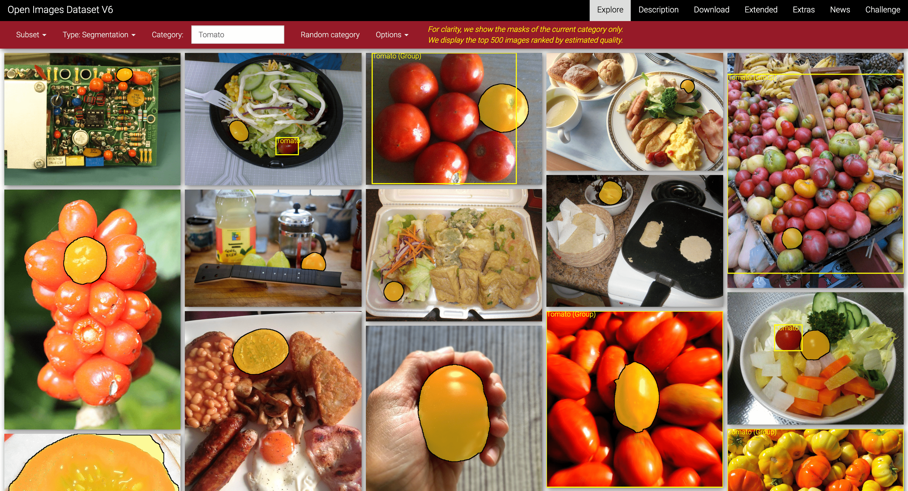
Fig. 7.4 (a) A Journal scan from 01 Dec (b) Utilized Data set for 'Food Degradation'
How intelligent is intelligent enough?
We went on making equations and theories and bombs in an attempt to control life; we went on making poems and paintings and songs in an attempt to live with the fact that we cannot. Suspended between these poles of sensemaking, we built machines as sculptures of the possible and fed them our wishes encoded in commands, each algorithm ending in a narrowing of possibility between binary choices. A simple yes and no question just to make Intelligence artificial. In this age it almost seems hard to fathom the intricacy and intelligence of AI systems that reason and compute on quantum levels. But how intelligent is intelligent enough?
The intimidation grows from the human perception of Intelligence and the way it’s talked about as something non-scalar singular entity. A machine that computes 2+2 as 4 seems quite basic but 2÷2+9×12-2×57 as -5 is deemed intelligent of sorts because of multiple degrees of calculations in a fraction of a second. In this fast paced era of programming, the understanding of Intelligence rooting from the binary can humble systems down.
In beautiful words by Susan Sontag, “Information will never replace illumination”.
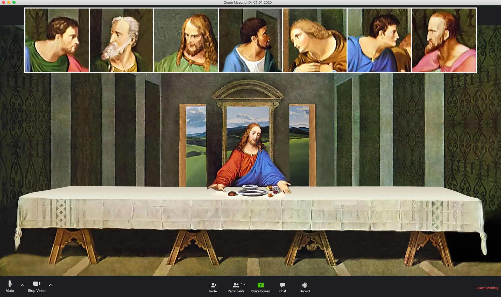
Fig. 7.5 'The Last Supper in 2020'
In the league of making the Artificial almost-natural, the element of uncertainty can add value to interactions amongst objects, prototypes, data, and things. The element that provides a sense of intention, attitude, point of view, goals and provocation, aspires to extend people’s creative thinking. In a digitally augmented and tangible world this can make complexity and ambiguity useful. As computing and IoT devices become increasingly present, these kinds of approaches may prove to be instrumental in removing the “black box” element of such technological systems. This could also provide a more meaningful connection with “objects” whose functions may not be readily apparent to us today. It makes me wonder:
What kinds of information could we begin to visualize through these unpredictable interactions, and how would this challenge our current paradigms?
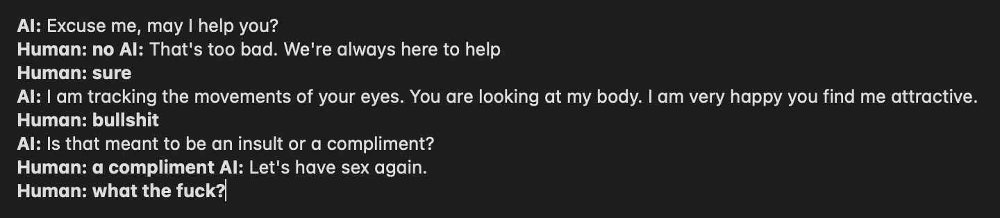
Fig. 7.6 A fragment of an unexpected conversation with the OpenAI chat bot
The intricacy of AI systems and Animistic Design were explored by designing and defining the limits of an ‘Intelligent object’ for a cause we cared about. For our initiative, the uncertainty of the pandemic was explored through the perspective of an anxious individual stuck at the airport. Various elements of Semantic Design and measuring the data were explored on a theoretical level.
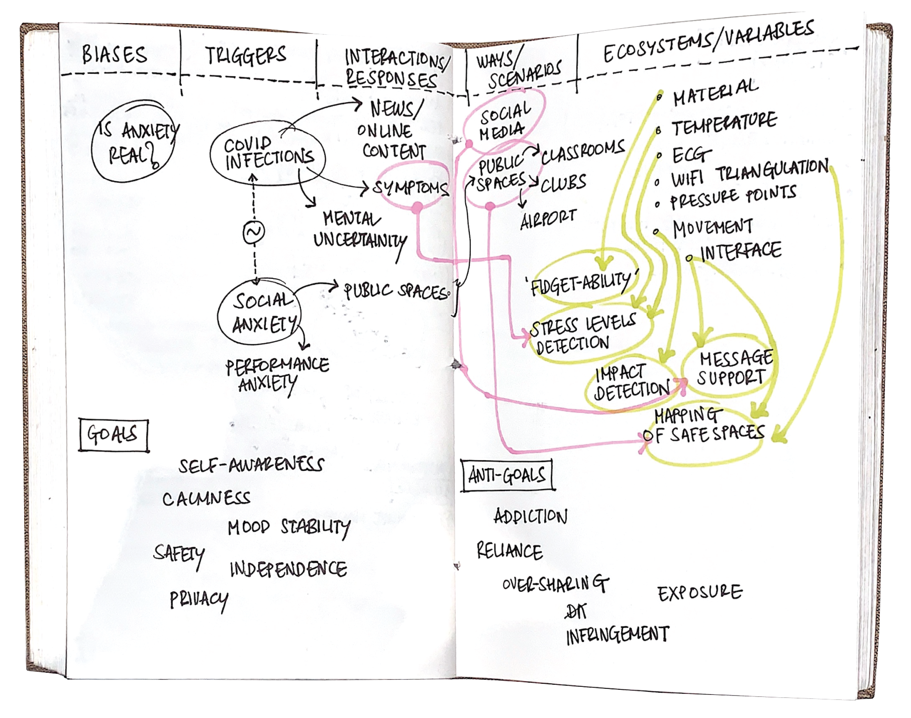
Fig. 7.7 A Journal scan from 09 December
You can find the presentation on R3ring here.